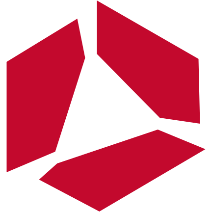

A launch film.
And every layer
behind it.
Make the motion your own. Render it locally. Bring image, video and audio from Raywake when you need them.
Run the free demo12 seconds · 1280 × 720 · sound on in the MP4
This demo uses code-drawn graphics and synthesized sounds. No API key. No generation charge.
Make this film
on your machine.
You get the video, poster, contact sheet and editable source. Change a line, move a beat, render again.
Node.js 22+, FFmpeg and Chrome/Chromium.
Full installation guide ↗Quickstart
git clone https://github.com/oguzhankayan/motion-engine.git
cd motion-engine
npm ci
npm run demo
Your media.
Your next launch.
Use files you already have, or generate new image, video and audio assets with Raywake. See the USD quote first. Set your budget. Keep the downloaded result in your project.
Get a Raywake API key ↗Already using Etsy Engine?
Bring an exported product image into the product starting point. Turn the same asset into a short, editable advertisement.
Explore Etsy Engine ↗